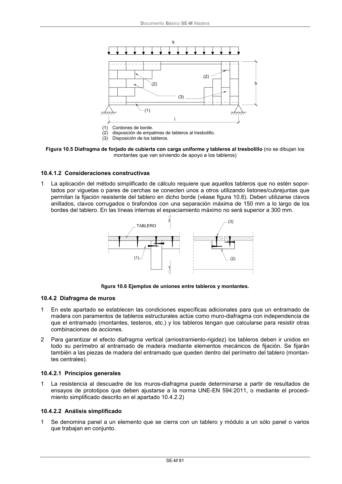

DB-SE-M Madera · edición 2019-12-20 · capa oficial
Documento DB-SE-M-oficial · SHA-256 del PDF 26b5819839ebfda78b0b119c5e76a0a37773b0d763c05688541870075df93718
Copia fiel del PDF fuente · Fuente oficial
Ficha de la disposición en la fuente oficial
Formatos: JSON del segmento · Markdown
10.4.1.1 Análisis simplificado 1 Este apartado se refiere a diafragmas simplemente apoyados de forjados y cubiertas, formados por tableros estructurales unidos al entramado de madera mediante elementos mecánicos de fijación (clavos, grapas, tirafondos, pernos). 2 La capacidad de carga de los elementos de fijación en los bordes del tablero pueden incrementarse multiplicando por un factor de 1,2 los valores obtenidos con el capítulo 8 relativo al cálculo de unio- nes. 3 El análisis simplificado de diafragmas simplemente apoyados solicitados por una carga uniforme- mente repartida puede realizarse como se indica más adelante siempre que se cumplan las condi- ciones siguientes: a) la luz L varia entre 2b y 6b, siendo bel canto del diafragma; b) el fallo del diafragma es debido a los medios de fijación y no a los tableros; c) los paneles se fijarán de acuerdo con las especificaciones dadas en el apartado 10.4.1.2. Los cordones de borde (véase figura 10.6) deben proyectarse para resistir el esfuerzo axil de trac- ción o compresión, N, derivado del momento flector: N=M/b (10.52) siendo: M=ql2/8 (10.53) Se supone que las tensiones tangenciales debidas a los esfuerzos cortantes que actúan sobre el dia- fragma se reparten uniformemente en todo el canto (b). 4 Si los paneles se disponen al tresbolillo (véase figura 10.5) la separación entre clavos en los bordes discontinuos de encuentro entre paneles puede incrementarse un 50% más (hasta un máximo de 150 mm) sin aplicar reducción alguna en la capacidad de carga. Así mismo, se recomienda el uso de de la disposición al tresbolillo. DocumentoBásico SE-M Madera SE-M 81 (1) Cordones de borde. (2) disposición de empalmes de tableros al tresbolillo. (3) Disposición de los tableros. Figura 10.5 Diafragma de forjado de cubierta con carga uniforme y tableros al tresbolillo (no se dibujan los montantes que van sirviendo de apoyo a los tableros)
